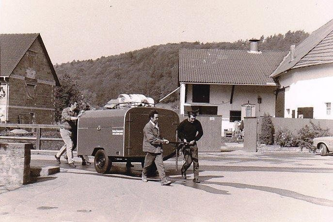
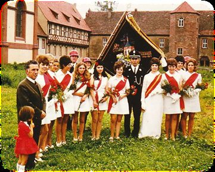
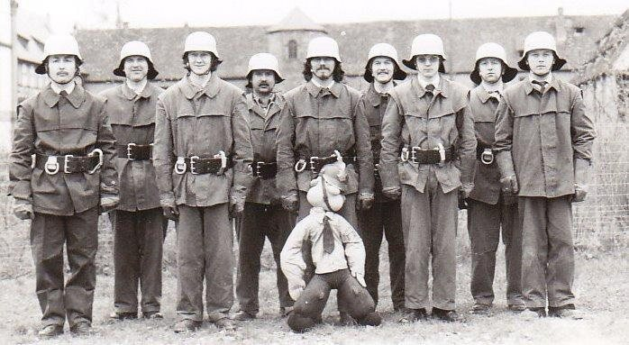
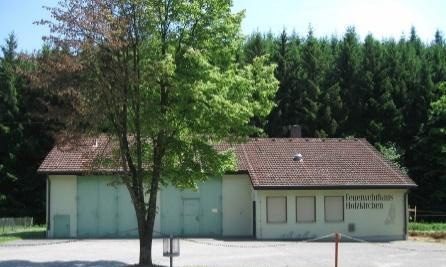
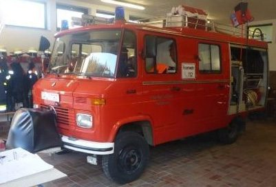
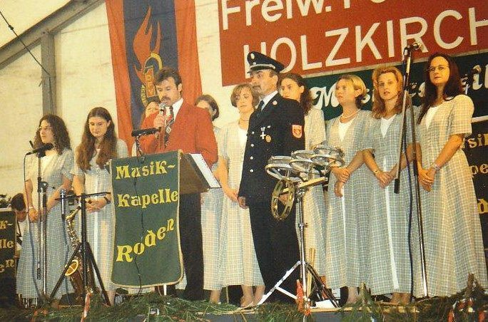
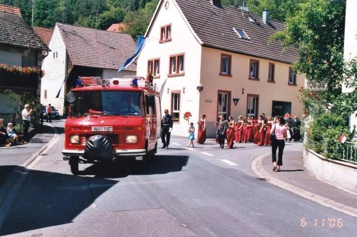
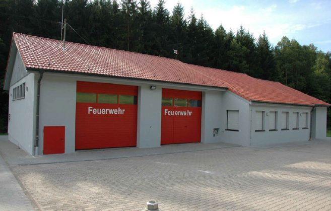
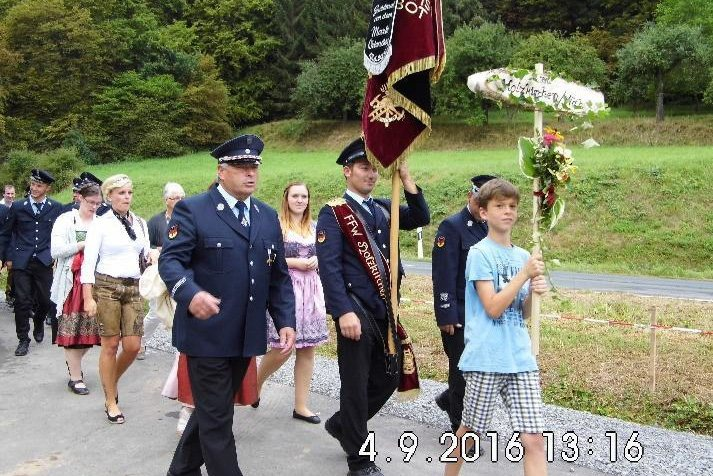

Chronik
130 Jahre Feuerwehr Holzkirchen
Von der handgezogenen Spritze bis zum MLF – die Geschichte unserer Wehr seit 1896.
- Gründung
Erster Kommandant wird Heinrich Pabst. Schon zwei Jahre später zählt die Wehr 34 aktive Wehrmänner.
- Erste Spritze
Eine kleine Saug- und Druckspritze, die die Wehrmänner noch selbst ziehen mussten. Wenige Jahre später folgt eine größere, pferdegezogene Spritze mit vier Sitzplätzen.
- Erste Motorspritze
Die Gemeinde übernimmt eine Motorspritze aus Wehrmachtsbeständen – sie tut über zwei Jahrzehnte gute Dienste. 1967 folgt eine neue Tragkraftspritze mit Anhänger.

Vorbereitung zur Übung am 3. Mai 1974 mit dem Tragkraftspritzen-Anhänger - Fahnenweihe
Zum 75-jährigen Bestehen bekommt die Wehr ihre Fahne, gewidmet dem Hl. Florian und dem Erzengel Michael. Pate steht die FF Birkenfeld.

Fahnenweihe 1971 - Leistungsprüfung in Gold
Erstmals legt eine Gruppe aus Holzkirchen die Leistungsprüfung in Gold ab. Seit 1968 wurden insgesamt rund 70 Gruppen ausgebildet.

Die Gruppe mit der Leistungsprüfung in Gold, 28. April 1979 - Neues Gerätehaus
Nach langer Standortsuche entsteht das Feuerwehrhaus am westlichen Ortsrand in Richtung Wüstenzell – mit über 2.000 Stunden Eigenleistung. Eingeweiht zum 85-jährigen Jubiläum.

Das neue Gerätehaus 1981 - Das erste eigene Feuerwehrauto
Am 6. Mai 1983 wird das Löschfahrzeug LF 8 bei der Firma Metz in Karlsruhe abgeholt. Rund zwei Drittel der 118.000 DM trug die Wehr selbst.

Das LF 8 von 1983 - 100 Jahre
Großes Stiftungsfest zum 100-jährigen Bestehen der Wehr.

Festabend zum 100-jährigen Jubiläum - 110 Jahre
Festwochenende vom 10. bis 12. Juni 2006 – beim Festzug fuhr unser LF 8 an der Spitze.

Das LF 8 an der Spitze des Festzugs 2006 - Erweiterung
Pünktlich zum 115-jährigen Jubiläum ist der Anbau fertig: Küche, Schulungsraum, Werkstatt, Atemschutzraum und neue Hallentore.

Das Feuerwehrhaus nach der Erweiterung - 120 Jahre und neuer MTW
Festwochenende vom 3. bis 5. September 2016 mit zahlreichen Gastwehren. Im selben Jahr ersetzt ein Ford Transit den VW-Bus von 2001 als Mannschaftstransportwagen.

Festzug zum 120-jährigen Jubiläum - MLF in Dienst
Nach über 30 Jahren löst das Mittlere Löschfahrzeug das LF 8 ab – übergeben beim Tag der offenen Tür am 1. Juli 2018.
- Digitale Alarmierung
Neue Meldeempfänger für beide Feuerwehren der Gemeinde – sie alarmieren auch dann, wenn das Mobilfunknetz ausfällt.
- 130 Jahre
Jubiläum mit dem gemeinsamen Sport- und Feuerwehrfest des FC Holzkirchen und der Feuerwehr vom 17. bis 20. Juli 2026.
Führung
Unsere Kommandanten und Vorstände
| Heinrich Pabst | 1896 – 1898 |
| Michael Huppmann | 1898 – unbekannt |
| Johann Philipp Weigand | unbekannt |
| Philipp Streitenberger | unbekannt – 1919 |
| Heinrich Dinselbacher | 1919 – 1937 |
| Ignaz Kohrmann | 1937 – 1955 |
| Josef Weis | 1955 – 1957 |
| Karl Müller | 1957 – 1970 |
| Ernst Pscheidl | 1970 – 2000 |
| Tino Schmelz | 2000 – 2009 |
| Klaus Neumann | 2009 – 2012 |
| Matthias Müller | 2012 – 2018 |
| Sebastian Huppmann | seit 2018 |
| Ernst Pscheidl | 1970 – 2000 |
| Dieter Kohrmann | 2000 |
| Klaus Neumann | 2000 – 2018 |
| Daniel Bachmann | seit 2018 |